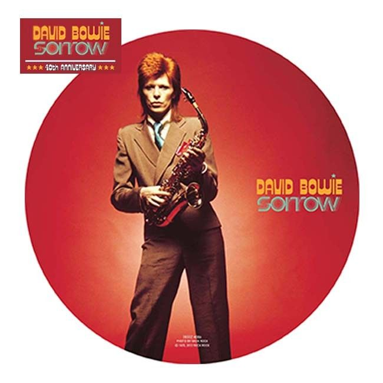

I was pretty upset when I discovered a few months ago that I had, substantially, lost all my music. Something actually worse than merely having all the files erased: for some reason I still don't understand, my files had been corrupted (it seems) at random. Some of them you could play fine all the way through, some would stop in the middle of the song, some wouldn't even start playing... A nightmare.
First, I had to find an automated way to detect corrupt files and either detect the cause or make sure no new files were getting corrupted every day. (The latter happened, so as of today I still don't know how my library got spoiled.) Then, I had to build a new library from the remains of the previous one.
But my point is that this accident turned out to be a chance for me. A chance to give some thoughts to the way I listen to music, and discover how much I have been conditioned (yes, in the Pavlov understanding) by the iPod/iTunes way to listen to music. These are the thoughts I want to share today.
How do you discover music?¶
For the ones (like me) who spend time organizing their music libraries, maybe completing the ID3 tags, fetching album art, etc., this is a question worth asking. If someone points you out to a new album, how do you make sure you will eventually listen to it (in good conditions)? Have you ever erased files from your music library, e.g. to make room for new stuff?
Before the accident, I realize I had never erased a single file from my music library, and if someone was giving me a new album to listen to, I would just add it to my library, and maybe to some playlist so I was sure it would appear on my walkman as well. But my way of listening to music was basically:
- during my commute: Shuffle library;
- at work: mainly Shuffle library, skipping songs that made me lose focus;
- at home Shuffle library, maybe stay with the album whenever I jumped onto a song fitting my mood.
Where did I discover new music in all this? Why always stay with Shuffle?
Most likely because I don't know exactly what I want to listen to now. And also because I'm doing something else and I just want to listen to music for pleasure, because it makes the moment more enjoyable. So, most of the time, I won't stay with a song I don't know already (unless it is very catchy). Not that I consciously don't want to listen to new music, but discovering something new would ask for brain time, sensibility, and the most likely reaction to this when you're doing something else is "no". Skip. Maybe "ah, I should listen to that later".
With this daily usage, you invest no brain time into selecting your music. Shuffle is the easy solution: give me some music, if I don't like I'll skip. But if you do that, when you find a new album to listen to, adding it to your library and stamping it "I'll listen to this later" will fail. For example, I've discovered last month that I love the album Demon Day by Gorillaz. Every single song sounds great to my ears, the band explores so much ways to do music, ... But this music is non-conventional, you have to put yourself in the mood to listen to it (at least the first time). I've had this album in my library for years, skipping any song now and then.
Think different¶
While I was creating my new library from the remains of the old one, I noticed a few facts:
- ~30% of my music was corrupted (OK, you don't care, but hell it hurts...);
- I had listened (completely and for sure) to only ~250 over my ~400 albums;
- I had partially listened to ~100 albums;
- the remaining ~50 albums I had never listened to;
- all unlistened/partially listened albums were recent.
This led me to the following conclusion: you should not use your music library to listen to music. It's too big, too biased toward old content.
Next question would be: what are other ways to listen to music? What approaches yield a good balance between discovering new music you have in store and not spending too much time thinking about what kind of music you want to play right now?
Suggestions¶
As I imported albums one by one from my old library to the new one, I started experimenting new ways to organize and play my music. Most prominently, in terms of devices:
- I bought a Hi-Fi set for home. It can play MP3 files from CD or USB keys, but it's not plugged to my whole library. On a regular basis, say every other week, I would take the key, remove the albums I feel I have listened to well enough and pick a new selection of fresh albums. Total amount of time: ~15 min every two weeks, almost 1 minute a day. Not much.
- Most of the time I use my phone to play music in Shuffle mode. Now, my phone drive would store ~100 songs and a few albums. The albums would be some I already appreciate, in case I want to stay with the artist while in the bus/train. The songs would be sampled totally at random.
As to music discovery, the Hi-Fi set proved to be a successful move. Back home, I can play some new album while I'm doing something else I don't enjoy much (e.g. cleaning) or that does not require my attention, so I'm all focus for the music. Otherwise, I still find myself almost unable to discover new music on my phone: while commuting/walking/working, I'd rather play music I'm already familiar with.
Conclusion?¶
This post is mainly a sketch for a question I'm asking myself more and more often: what would be new ways to listen to music? How do you achieve a good balance between
exploration: discovering new music, maybe albums you already have in store and you just don't know; exploitation: listening to music you already know (but not too much: if you always listen to the same songs, after a while you won't enjoy them anymore...) brain time: don't spend too much time thinking about this problem (e.g. writing a long blog post about it...)
PS: the debate continues (in French!) on Vincent Tourraine's blog: L'avenir du Digital Hub.

Discussion ¶
Feel free to post a comment by e-mail using the form below. Your e-mail address will not be disclosed.